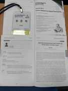

Service Intelligence Laboratory
Undergraduate Research Intern · Ajou University
BRIGHTEN V1/V2의 passive smartphone sensing 데이터를 이용해 within-person behavioral anomaly와 이후 PHQ-9 변화의 lagged association을 연구하고 있습니다.

UNDERGRADUATE RESEARCHER · AJOU UNIVERSITY
Digital Healthcare · Longitudinal Health Data · Medical Image AI
아주대학교 산업공학과에서 머신러닝과 데이터 분석을 공부하며, 환자가 일상에서 생성하는 데이터로 건강 상태의 변화를 포착하고 임상적으로 해석 가능한 신호로 연결하는 방법을 연구하고 있습니다. 현재는 passive smartphone sensing 기반 개인별 행동 이상과 이후 우울 증상 변화의 시간적 연관성을 분석하고 있으며, 이전에는 환자 촬영 의료영상의 분류·병변 위치 추정·강건성 문제를 연구했습니다.
“개인을 집단 평균에 맞추는 예측보다, 한 사람 안에서 의미 있게 달라지는 시점을 찾는 의료 AI를 연구합니다.”
HEALTHCARE ML
MEDICAL IMAGING
DATA
TOOLS
Undergraduate Research Intern · Ajou University
BRIGHTEN V1/V2의 passive smartphone sensing 데이터를 이용해 within-person behavioral anomaly와 이후 PHQ-9 변화의 lagged association을 연구하고 있습니다.
Undergraduate Research Intern · Ajou University
비표준화된 patient-captured stoma images를 대상으로 분류, background-bias 분석, annotation-efficient lesion localization과 자동 전처리 파이프라인을 연구했습니다.
DIGITAL HEALTHCARE & BIOMEDICAL AI
Service Intelligence Laboratory · Sole-Author Manuscript in Preparation
Question Passive sensing에서 관찰되는 개인별 행동 이상이 이후 PHQ-9 변화에 선행하는가?
Approach 반복측정 자료에서 between-person difference와 within-person change를 구분하고, 참여자별 habitual baseline에서 벗어난 anomaly event를 구성해 이후 증상 변화와의 시간적 연관성을 검증합니다. BRIGHTEN V1을 주 분석에 사용하고 V2에서 재현성을 확인합니다.
Direction Cross-person screening보다 개인 내부의 변화 시점을 포착하는 longitudinal monitoring과 early-warning framework를 지향합니다.
view research details ↗ML & Data Mining Laboratory · Industry-Academic Collaborative Research
Problem 15장의 bounding-box annotation과 707장의 unlabeled image만으로, 촬영 조건이 일정하지 않은 환자 스마트폰 장루 영상에서 ROI를 안정적으로 찾아야 했습니다.
Method Faster R-CNN 기반 pseudo-label generation에 WSOL을 결합하고, 다중 객체 환경에서 잘못된 후보가 선택되는 문제를 줄이기 위해 장루의 시각적 특성인 red-color prior, luminance contrast, orientation, center proximity를 반영한 saliency score를 설계해 detector confidence와 함께 후보를 재평가했습니다.
Result 707장 중 673장을 pseudo-label로 선별했고, group k-fold test에서 Mean IoU 0.7796, Dice 0.8681을 기록했습니다.
view research details ↗ML & Data Mining Laboratory · Industry-Academic Collaborative Research
Problem 높은 분류 성능이 실제 병변을 보고 내린 판단인지 검증할 필요가 있었습니다.
Method EfficientNet-B0을 학습한 뒤 Grad-CAM으로 attention을 점검해 background shortcut을 확인하고, ROI-centered preprocessing과 Label Smoothing으로 모델을 재설계했습니다.
Result Baseline AUC 0.8919에서 optimized AUC 0.92로 개선했습니다. 이 경험이 이후 explicit ROI localization 연구로 이어졌습니다.
view research details ↗Yongin Severance Digital Healthcare Hackathon → Avison Biomedical Symposium
Question 일상 행동과 EMA로 구성된 longitudinal data로 우울·불안 상태의 연속적 변화를 예측할 수 있는가?
Method Digital phenotype와 EMA를 participant-level sequence로 구성하고 LSTM으로 PHQ-9와 GAD-7을 예측했으며, 결과를 personalized monitoring/reporting prototype으로 연결했습니다.
Result PHQ-9 R² 0.6312, GAD-7 R² 0.6159. 용인세브란스 디지털 헬스케어 해커톤 대상 이후 Avison Biomedical Symposium 발표와 현재 BRIGHTEN 연구로 확장되었습니다.
view research details ↗HEALTHCARE & BIOMEDICAL
국민건강영양조사와 대기오염 데이터를 결합해 인구집단별 우울 위험 구조를 분석하고, 군집별 Random Forest 기반 위험 프로파일을 비교했습니다.
view project ↗
INDUSTRIAL ENGINEERING & PUBLIC SERVICE
수요·접근성 요인을 머신러닝과 공간 단위 분석으로 통합해 신규 DRT 서비스 후보 권역을 도출했습니다.
view project ↗
결빙 위험 요인을 이용해 도로별 위험도를 추정하고 우선 설치 대상 구간을 제안했습니다.
view project ↗
ADDITIONAL PROJECTS
AI-Enabled Hospital Information System with Risk Prediction
MySQL · Healthcare Data · ML Prediction
DOE-Based Plating Quality Optimization
Design of Experiments · Process Quality
Smart Factory Design for Eco-Friendly Paper Cup Production
Automation · Process Design
Comparative Tap-Water Quality Analysis in Beijing
Field Sampling · Comparative Analysis

23rd Avison Biomedical Symposium 2026 · Digital Medicine in Mental Health · Jun. 2026
Digital phenotype와 EMA의 longitudinal sequence를 이용한 LSTM 기반 정신건강 예측과 personalized monitoring framework를 발표했습니다.
view presentation ↗Passive smartphone sensing · within-person change · subsequent PHQ-9 change · Aug. 2026 — Present
B.S. Candidate in Industrial Engineering · Expected Early Graduation
GPA 3.92 / 4.50 · 109 credits completed · Artificial Intelligence in Medicine microdegree completed
AWARDS
TRAINING
Medical Artificial Intelligence Bootcamp
Ajou University College of Medicine & Insilicogen · Sep. 2025
SK AI Dream Camp — Advanced Course
Jun. 2025 — Aug. 2025
LEADERSHIP
President, LOPE
Lotte Scholarship Foundation Student Association · Feb. 2026 — Present
President, WAI
Industrial Engineering Career Academic Club · Feb. 2026 — Present